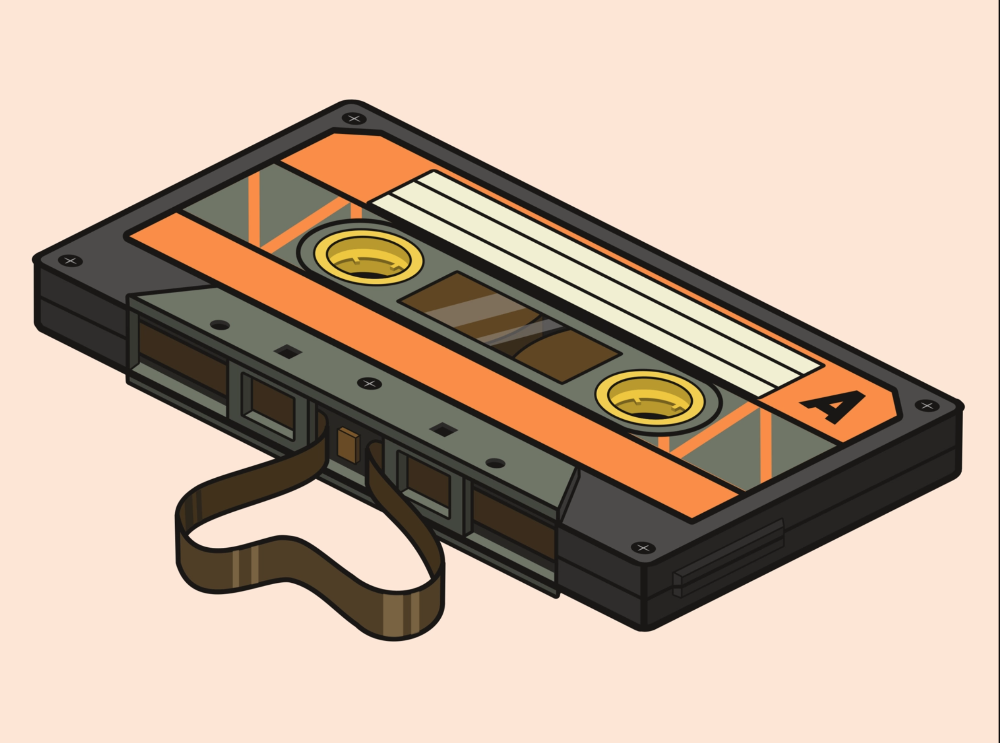

Head to the roof

Apollo and Atlas have an intense rivalry, this isn't because of some clear goal like being a better sports player or being smarter, it's a very vague rivalry which started when Apollo said it's a rivalry and Atlas went along with it. Since that day they fight relentlessy at every chance they get. Even on this day of meeting, they have to have showdown. These kind of battles aren't really bound by any rules or boundries. They are just that, showdowns. And their weapons of choice reflect this perfectly.
> StrifeGo Back